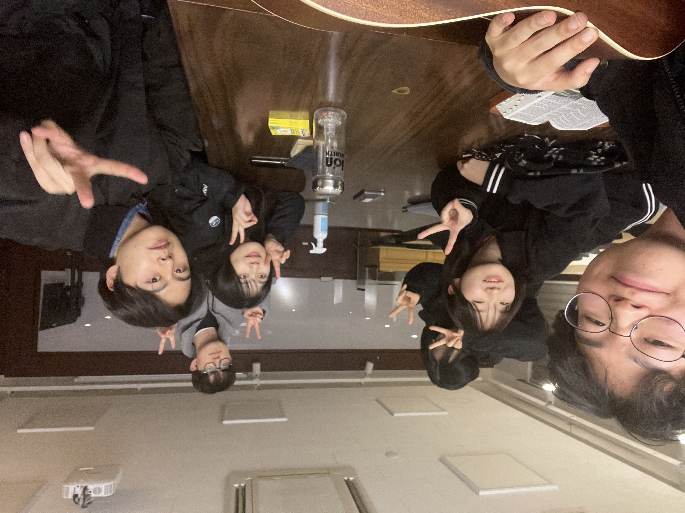

근황
안녕하세요.
세상을 사랑하시는 하나님의 마음에 동참하기를 소망하는 복 있는 나그네 이태민입니다.
개인적으로 올해가 인생에서 가장 바쁘게 흘러가서 벌써 연말이라는 것이 실감이 안나는데, 중보자님은 한 해를
어떻게 보내셨는지 궁금합니다!
저는 한동대에서 계속해서 학업과 연구를 이어가고 있으며 내년에는 한동대에서 마지막 일년을 보낼 예정입니다.
특별히 올해는 많은 것을 배우고 성장하는 시간이었습니다. 봄학기에는 한동대만이 가지고 있는 특별한 수업인
공동체리더십 훈련에서 절세미녀 팀의 팀장을 맡으며 협동, 섬김과 리더십을 배웠고, 가을학기에는 한동대 CGV
Lab에서 연구활동을 하며 전공과 관련된 전문적인 지식을 많이 쌓을 수 있었습니다. 항상 하나님께서 만남의
축복을 더해주셔서 공동체리더십 훈련, 연구활동 모두 정말 좋은 사람들과 함께 할 수 있었고, 덕분에
힘들면서도 가장 행복한 일년을 보냈습니다.
 <팀 절세미녀와
함께>
<팀 절세미녀와
함께>
하나님께서 저를 예배가 없는 곳에 예배를 세우는 예배자로 사용하시기를 원하시고 부르셔서 작년부터 지금까지 팀
기도회를 인도하고 있습니다. 올해는 팀 절세미녀와 함께 팀 기도회를 매주 가지면서 바쁨 속에서 하나님을
기억하는 훈련을 이어갔습니다. 매주 기도회를 인도하는 것은 쉽지 않았습니다. 하지만 하나님께서 팀 기도회를
통해 하나님을 사모하는 영혼들을 발견하게 하셔서 도리어 저를 위로하시고 제 부족한 믿음을 성장시키셨습니다.
팀 기도회를 통해서 하나님이 주시는 은혜를 나누면서 온전히 그 은혜를 누릴 수 있었습니다. 저는 계속해서 제
삶으로 하나님이 드러나길 소망하고 하나님 나라를 전할 것입니다.

<팀 절세미녀
기도회>
 <쿠르디스탄 소개
사진>
<쿠르디스탄 소개
사진>